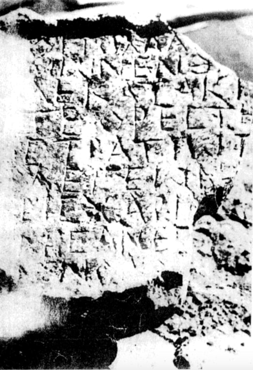

კირქვის ოთხკუთხა ბერძნულწარწერიანი სტელა
შინაარსი / Summary
ეპიტაფია
ბიბლიოგრაფია Bibliography
კრიტიკული გამოცემა Interpretive Edition
Χ(ριστό)ς πολλά κις
κρ εί ιων ἐνθ ά-
δε κατάκ ει ι-
ται Ὀρέστη ς
5στρατιώτ ης
λε γεων ά-
ρις θαρ αλ
αρις ἀνέγ νων
μολεῖ ν
დიპლომატიური გამოცემა Diplomatic Edition
ΧΣ ΠΟΛΛΑ ΚΙΣ
ΚΡ ΕΙ ΙΩΝ ΕΝΘ Α
ΔΕ ΚΑΤΑΚ ΕΙ Ι
ΤΑΙ ΟΡΕΣΤΗ Σ
5ΣΤΡΑΤΙΩΤ ΗΣ
ΛΕ ΓΕΩΝ Α
ΡΙΣ ΘΑΡ ΑΛ
ΑΡΙΣ ΑΝΕΓ ΝΩΝ
ΜΟΛΕΙ Ν

Grave stele, Sukhumi, 1991
{'ka': 'ქრისტე მრავლისშემძლე (/ყოველთა მეუფე ?). აქ განისვენებს ორესტე ჯარისკაცი ლეგიონერი მამაცი (?) გარწმუნებთ (ან – გთხოვთ) მოხვიდეთ (ან – იზრუნოთ) (იგულისხმება – \n საფლავთან მოხვიდეთ, საფლავზე იზრუნოთ).'}
{'default': 'ენობრივი თვალსაზრისით სოხუმის წარწერაში აღსანიშნავია: დიფთონგების მონოფთონგიზაცია: ει–ι (κρείων||κρίων; κατάκειται||κατακιτε). –ιος დაბოლოება იძლევა ις–ს \n (λεγεωνάρις=λεγεωνάριος–ს, ან λεγιονάρις).'}
<div type="edition" xml:lang="ka" ana="mtavruli" xml:space="preserve">
<ab>
<lb n="1"/><w lemma="ქრისტე"><expan><abbr>ქ</abbr><ex>რისტ</ex><abbr>ე</abbr></expan></w>
<w lemma="განსუენება"><expan><abbr>გა</abbr><ex>ნ</ex><abbr>ო</abbr><ex>ჳ</ex><abbr>ს</abbr><ex>უ</ex><abbr>ენე</abbr></expan></w>
<w lemma="სულ">სოჳ<lb n="2" break="no"/>ლსა</w>
<name nymRef="ვაჩა">ვაჩაჲს<lb n="3" break="no"/>ასა</name>
<name nymRef="გურა"><expan><abbr>გო</abbr><ex>ჳ</ex><abbr>რაჲ<lb n="4" break="no"/>სასა</abbr></expan></name>
<name nymRef="მირა"><expan><abbr>მ</abbr><ex>ი</ex><abbr>რა</abbr><ex>ჲ</ex><abbr>ს</abbr><ex>ა</ex><abbr>ს</abbr><ex>ა</ex></expan></name>
</ab>
</div>